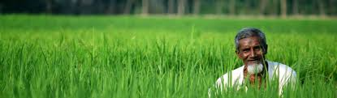

|  | |
| Home About Contact | |
About usThe borders of modern Bangladesh were established with the partition of Bengal and India in August 1947, when the region became East Pakistan as a part of the newly formed State of Pakistan following the Radcliffe Line.[5] However, it was separated from West Pakistan by 1,600 km (994 mi) of Indian territory. Due to political exclusion, ethnic and linguistic discrimination, as well as economic neglect by the politically dominant western-wing, popular agitation and civil disobedience led to the war of independence in 1971. After independence, the new state endured famine, natural disasters, and widespread poverty, as well as political turmoil and military coups. The restoration of democracy in 1991 has been followed by relative calm and rapid economic progress. Bangladesh is today a major manufacturer in the global textile industry. |
|